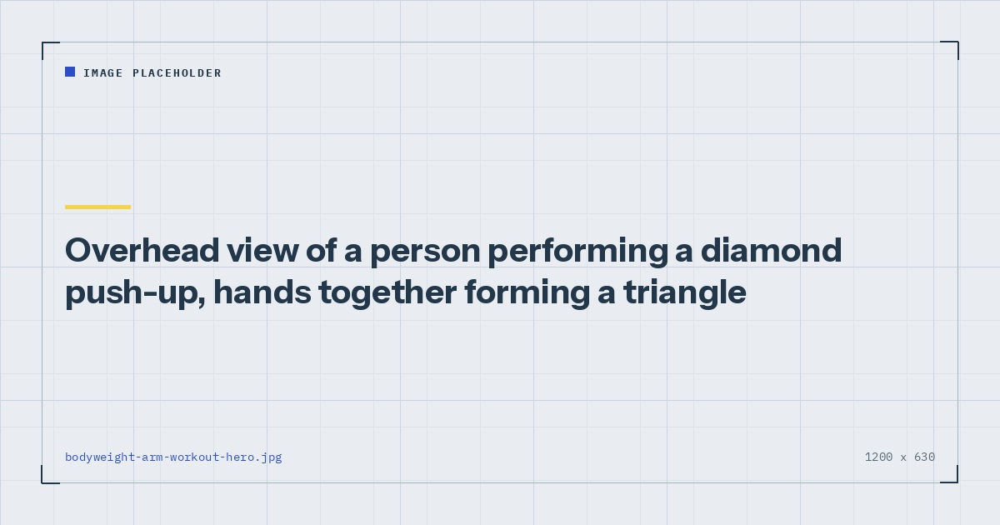

Bodyweight Strength
Bodyweight Arm Workout: Biceps and Triceps With No Weights
Triceps are straightforward without weights. Biceps are the single hardest muscle to train with nothing, and most articles pretend otherwise.

Arms are the body part people most want to train directly and the one where equipment-free training is most uneven. One half is easy to load with nothing; the other half is genuinely difficult.
Being straight about which is which saves a lot of wasted effort.
The honest picture
Triceps extend the elbow, and pushing your bodyweight away from something extends the elbow. Every push-up, dip and pike push-up trains them, and there are excellent bodyweight variations that load them heavily.
Biceps flex the elbow, and flexing the elbow against your own bodyweight requires you to be pulling toward something. Without a bar, a band or at least a door handle, there is no good way to do it. Isometric self-resistance exists and does something, but it is a weak substitute.
So: triceps yes, biceps only if you have something to pull against. Anyone telling you otherwise is padding a list.
Triceps: the straightforward half
Diamond push-up
Hands together under the chest forming a rough triangle with thumbs and index fingers. The narrow position shifts a large share of the work from the chest to the triceps. Three sets of eight to fifteen.
If it is too hard, do it with hands on a raised surface rather than dropping to your knees — the incline principle from the push-up progression ladder applies here too.
Chair dip
Hands on the edge of a chair or sofa behind you, feet out in front, lowering by bending the elbows. Almost pure triceps. Move your feet further away to make it harder, elevate them on another chair to make it harder still.
Note the shoulder position is one some people find uncomfortable. Safe setups are covered in dips at home.
Close-grip push-up
Hands directly under the shoulders rather than wider. Less extreme than the diamond and easier to do with good form, which makes it the better option for higher-volume work.
Bodyweight skull crusher
Hands on a table or counter edge, body angled, and lower by bending only the elbows so your forehead travels toward the surface. Elbows stay pointing forward and stationary. Three sets of eight to twelve.
The most direct bodyweight triceps isolation exercise available. Adjust difficulty by changing the height of the surface.
Biceps: the hard half
All of these need something. There is no way around it.
Towel curl on a door handle
Loop a towel around a sturdy door handle, lean back holding both ends with palms up, and curl yourself upright by bending the elbows only. Keep the upper arms still. This is the best free option.
Underhand row
Any rowing variation with palms facing up recruits the biceps heavily. Under a table, on a bar, or with a towel. The options are in rows at home.
Chin-up and chin-up negatives
The best biceps exercise available at home if you have a bar. Palms facing you, which places the biceps in a strong position. If you cannot yet do one, negatives work — see how to do your first pull-up at home.
Isometric self-resistance curls
Push down with one hand against the other as you attempt to curl it. This does produce some adaptation, but isometric strength gains tend to be fairly specific to the joint angle trained, and there is no easy way to progress the resistance. Include it only if you truly have nothing else.
A single resistance band or one light dumbbell solves the biceps problem entirely and costs very little. If arm development matters to you, this is the highest-return purchase available — see the resistance bands guide.
The session
Ten to fifteen minutes at the end of an upper-body day. Arms are small muscles and do not need a session of their own.
- Diamond push-up — 3 × 8–15
- Towel curl or underhand row — 3 × 10–15
- Bodyweight skull crusher — 3 × 8–12
- Chair dip — 2 × 10–15
Rest sixty seconds between sets. Take the last set of each close to failure — with light loads, proximity to failure is what produces the adaptation.1
Why compound work does most of it
Worth stating plainly, because it changes how much direct arm work is worth doing.
Your triceps are heavily involved in every push-up, dip and pike push-up. Your biceps are heavily involved in every row and pull-up. If you are already doing three or four sets of each of those twice a week, your arms are receiving a substantial amount of work before you do a single dedicated set.
Weekly volume drives growth up to a point,2 and that total includes the indirect volume from compound movements. Adding twelve dedicated arm sets on top of a full pushing and pulling programme can push past the useful range into territory where you are accumulating fatigue rather than stimulus.
Four to eight direct arm sets a week, on top of your normal pressing and pulling, is a sensible amount for most people training at home.
If your arms are not growing, the answer is almost never more curls. It is usually more rows and more push-ups, done harder.
Programming and expectations
Twice a week, at the end of upper-body sessions. Never as a standalone session — arms do not warrant one, and time spent there is time not spent on movements that train more muscle.
Two honest expectations. First, arm size is substantially determined by overall muscle mass and by genetics, and no arrangement of home training changes that much. Second, visible arm definition is mostly a body-fat question rather than a training one, in the same way visible abdominals are — the framing is in core training without sit-ups.
What bodyweight arm training will reliably do is make your arms stronger and somewhat larger, particularly if you are starting from untrained. That is a real result and worth the ten minutes.
Where to go next
Most of your arm development comes from pressing and pulling volume — see how to build chest muscle without weights and rows at home.
Frequently asked questions
Can you build biceps without weights?
Only if you have something to pull against — a bar, a band, a towel on a door handle, or a table for underhand rows. There is no effective way to load elbow flexion using nothing but the floor, and articles claiming otherwise are padding a list.
What is the best bodyweight triceps exercise?
The diamond push-up for general loading, and the bodyweight skull crusher against a table edge for direct isolation. Chair dips are also almost pure triceps and easy to scale by moving the feet.
Do I need to train arms separately?
Not much. Push-ups, dips and pike push-ups already train the triceps heavily, and rows and pull-ups train the biceps. Four to eight direct arm sets a week on top of a full pushing and pulling programme is sufficient for most people.
Are diamond push-ups good for triceps?
Yes, they are among the best bodyweight triceps exercises. The narrow hand position shifts a large share of the work from the chest to the triceps. If they are too hard, raise your hands rather than dropping to your knees.
How can I get bigger arms at home?
Increase your pressing and pulling volume rather than adding curls, since compound movements provide most of the arm stimulus. Add four to eight direct sets a week, and accept that arm size is substantially determined by overall muscle mass and genetics.
Do isometric self-resistance curls work?
They produce some adaptation, but isometric strength gains tend to be fairly specific to the joint angle trained and there is no easy way to progress the resistance. Use them only if you genuinely have nothing to pull against.
Sources and further reading
- Schoenfeld BJ, Grgic J, Ogborn D, Krieger JW. “Strength and Hypertrophy Adaptations Between Low- vs. High-Load Resistance Training: A Systematic Review and Meta-analysis.” Journal of Strength and Conditioning Research, 2017;31(12):3508–3523. PubMed.
- Schoenfeld BJ, Ogborn D, Krieger JW. “Dose-response relationship between weekly resistance training volume and increases in muscle mass: A systematic review and meta-analysis.” Journal of Sports Sciences, 2017;35(11):1073–1082. PubMed.
- Vieira AF, Umpierre D, Teodoro JL, et al. “Effects of Resistance Training Performed to Failure or Not to Failure on Muscle Strength, Hypertrophy, and Power Output: A Systematic Review With Meta-Analysis.” Journal of Strength and Conditioning Research, 2021. PubMed.
- NHS. Strength and Flex exercise plan.
Comments
Comments are not enabled yet. Add a hosted comment embed (Disqus, Commento, Giscus) inside this container when you are ready.